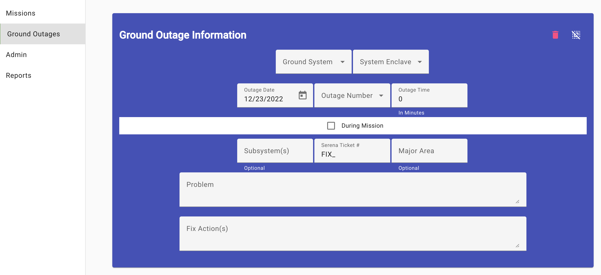
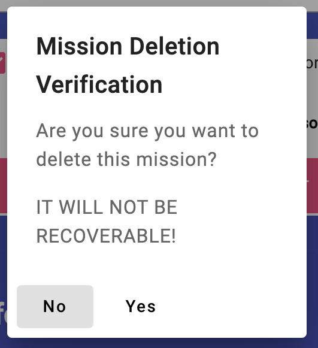

Entering a Ground Equipment Outage

A ground outage is defined as a any outage to ground equipment that might stop or
degrade this mission of exploitation. The loss of a single zone on a node
where backup zone is available and works IS NOT
an outage, but the loss of two of three might be a degradation that could
affect the mission. Check with your supervisor for more clarification.
- Ground System: The application provides a list of ground systems to
choose. Just select the appropriate system.
-
System Enclave: After you selected the overall ground system, the system
enclave select is provided a list of appropriate enclaves the system is
available on. Choose the correct enclave, understanding that sometimes
only one will be available.
-
Outage Date: This field is for the date the outage occurred. Click on
the icon in the field and a calendar will appear to allow you to choose
the correct date.
-
Outage Number: This field is normally automatically created, if you
select "New" in the drop-down. If this system/enclave already has an
outage on the date selected, it will also appear to allow you to edit,
rather than create a new outage. It is at this point that the outage
will be created or if a number was selected, it will be viewed in its
present form.
-
Outage Time: This field provides the amount of time the outage occurred
in minutes. Use a calculator if need be, but I hope the outage is of
short duration.
-
During Mission Checkbox: Check this box if the outage occurred during
a mission affecting the collection of information.
-
Subsystem(s): (Optional) This field is free text and allows you to
identify the ground system's subsystems affected by the outage.
-
Serena Ticket #: This field provides a reference to the SERENA ticketing
system where more complete information should be entered.
-
Major Area: (Optional) This provides another area to describe the areas
within the ground system the outage affects.
-
Problem/Fix Actions(s): These areas provide you the opportunity to
annotate what the problem looked like and what actions were completed to
fix it.
Clear the Outage: If you need to clear
the displayed outage, just click on the Clear Icon
( ) in the upper-right
portion of the outage view. This will not delete a outage already created
just empty the input fields.
) in the upper-right
portion of the outage view. This will not delete a outage already created
just empty the input fields.
Delete the Outage: If you need to delete
the current displayed outage from the database, click on the Delete Icon
() in the upper-right portion of the
outage view. You will be asked to verify the deletion, realizing that all
of the outage's data will be removed from the database and unrecoverable.
See below for an image of the verification dialog.

Edit Mission Sensor
Administrator Page